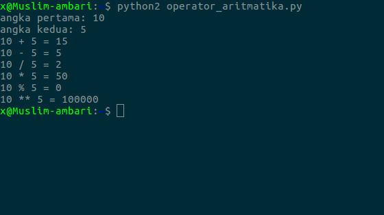
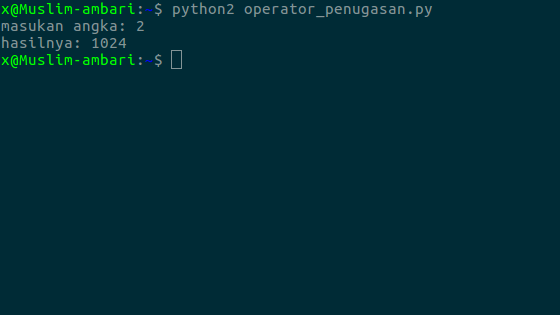
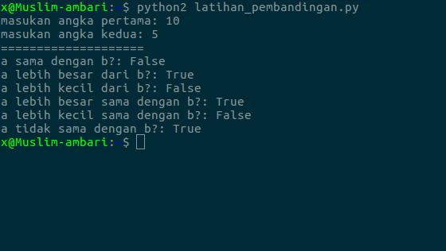
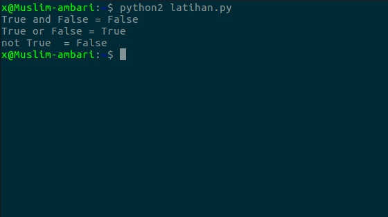
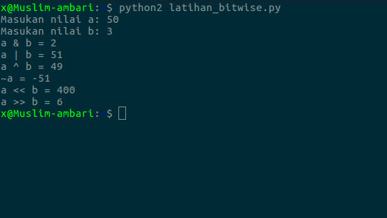
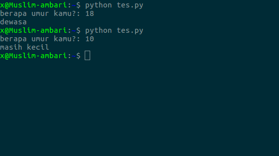

pada pembelajaran kali ini kita akan mengetahui 6 jenis operator di python.
1. operator aritmatika
2. operator penugasan
3. operator pembandingan
4. operator logika
5. operator bitwise
6. operator ternaty
1. operator aritmatika
opeartor aritmatika termasuk dalam operator yang paling sering digunakan dalam pemrograman.
| operator | simbol |
|---|
mari kita coba dalam program, buat file baru bernama
a
Hasilnya

operator ini digunakan untuk memberikan tugas pada variabel
nama
maka variabel nama telah kita berikan tugas untuk menyimpan angka 22
| operator | simbol |
|---|
kita coba dalam program, buat file baru bernama
angka
hasilnya:

operator ini digunakan untuk membandingkan dua buah nilai atau
sering juga dipakai untuk membuat sebuah kondisi.
| operator | simbol |
|---|
mari kita coba dalam program, buat file baru
a
Hasilnya:

operator logika digunakan untuk membuat operasi logika
| nama operator | simbol di python |
|---|
a
Hasilnya:

Operator Bitwise adalah operator untuk melakukan operasi berdasarkan bit/biner.
| nama | simbol |
|---|
kita coba dalam program, buat file baru bernama
a = input ("Masukan nilai a: " )
b = input ("Masukan nilai b: " )
# Operasi AND
c = a & b
print "a & b = %s " % c
# Operasi OR
c = a | b
print "a | b = %s " % c
# Operasi XOR
c = a ^ b
print "a ^ b = %s " % c
# Operasi Not
c = ~ a
print "~a = %s " % c
# Operasi shift left (tukar posisi biner)
c = a << b
print "a << b = %s " % c
# Operasi shift right (tukar posisi biner)
c = a >> b
print "a >> b = %s " % c
Hasilnya:

Operator ternary juga dikenal dengan operator kondisi, karena digunakan untuk membuat sebuah ekspresi kondisi seperti
umur
Hasilnya:

oke, sekian tentang pembelajaran mengenai 6 jenis operator di python
dan silahkan pelajari tutorial selanjutnya